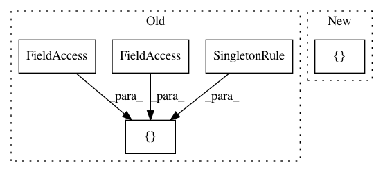

edd039bf98702f3eb01a7cd4e25559247e686a72,src/python/pants/engine/build_files.py,,create_graph_rules,#Any#Any#,320
Before Change
:param symbol_table_cls: A SymbolTable class to provide symbols for Address lookups.
symbol_table_constraint = symbol_table_cls.constraint()
return [
TaskRule(BuildFilesCollection,
[SelectDependencies(BuildFiles, BuildDirs, field_types=(Dir,))],
BuildFilesCollection),
// A singleton to provide the AddressMapper.
SingletonRule(AddressMapper, address_mapper),
// Support for resolving Structs from Addresses.
TaskRule(
symbol_table_constraint,
[Select(AddressMapper),
Select(UnhydratedStruct),
SelectDependencies(symbol_table_constraint, UnhydratedStruct, field_types=(Address,))],
hydrate_struct
),
resolve_unhydrated_struct,
// BUILD file parsing.
parse_address_family,
build_files,
buildfile_path_globs_for_dir,
// Spec handling: locate directories that contain build files, and request
// AddressFamilies for each of them.
addresses_from_address_families,
filter_build_dirs,
spec_to_globs,
]
After Change
:param symbol_table_cls: A SymbolTable class to provide symbols for Address lookups.
symbol_table_constraint = symbol_table_cls.constraint()
return [
TaskRule(BuildFilesCollection,
[SelectDependencies(BuildFiles, BuildDirs, field_types=(Dir,))],
BuildFilesCollection),
// A singleton to provide the AddressMapper.
SingletonRule(AddressMapper, address_mapper),
// Support for resolving Structs from Addresses.
TaskRule(
symbol_table_constraint,
[Select(AddressMapper),
Select(UnhydratedStruct),
SelectDependencies(symbol_table_constraint, UnhydratedStruct, field_types=(Address,))],
hydrate_struct
),
resolve_unhydrated_struct,
// BUILD file parsing.
parse_address_family,
build_files,
buildfile_path_globs_for_dir,
// Spec handling: locate directories that contain build files, and request
// AddressFamilies for each of them.
addresses_from_address_families,
filter_build_dirs,
spec_to_globs,
// Root rules representing parameters that might be provided via root subjects.
RootRule(Address),
RootRule(BuildFileAddress),
RootRule(AscendantAddresses),
RootRule(DescendantAddresses),
RootRule(SiblingAddresses),
RootRule(SingleAddress),
]
In pattern: SUPERPATTERN
Frequency: 3
Non-data size: 5
Instances
Project Name: pantsbuild/pants
Commit Name: edd039bf98702f3eb01a7cd4e25559247e686a72
Time: 2017-06-16
Author: stuhood@twitter.com
File Name: src/python/pants/engine/build_files.py
Class Name:
Method Name: create_graph_rules
Project Name: pantsbuild/pants
Commit Name: 2e14cb2c52b28f9392c90497f4ccb58facfeb95d
Time: 2019-04-02
Author: stuhood@twitter.com
File Name: src/python/pants/init/engine_initializer.py
Class Name: EngineInitializer
Method Name: setup_legacy_graph_extended
Project Name: pantsbuild/pants
Commit Name: 3f49af5b9e213b2de03060bc02d6d81128cb5dec
Time: 2018-04-18
Author: 1305167+cosmicexplorer@users.noreply.github.com
File Name: tests/python/pants_test/engine/test_isolated_process.py
Class Name: IsolatedProcessTest
Method Name: test_javac_version_example